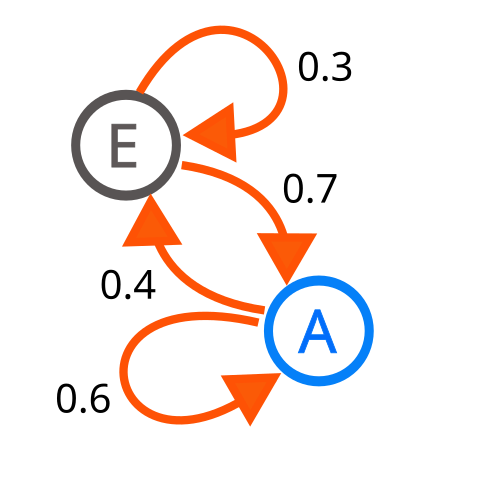

Це́пь Ма́ркова — последовательность случайных событий с конечным или счётным числом исходов, где вероятность наступления каждого события зависит только от состояния, достигнутого в предыдущем событии. Характеризуется тем свойством, что, говоря нестрого, при текущем настоящем состоянии системы, её будущее состояние не зависит от прошлого. Названа в честь А. А. Маркова (старшего), который впервые ввёл это понятие в работе 1906 года.

В случае цепи Маркова N-го порядка вероятность наступления каждого события зависит от состояния, достигнутого в N предыдущих событиях.